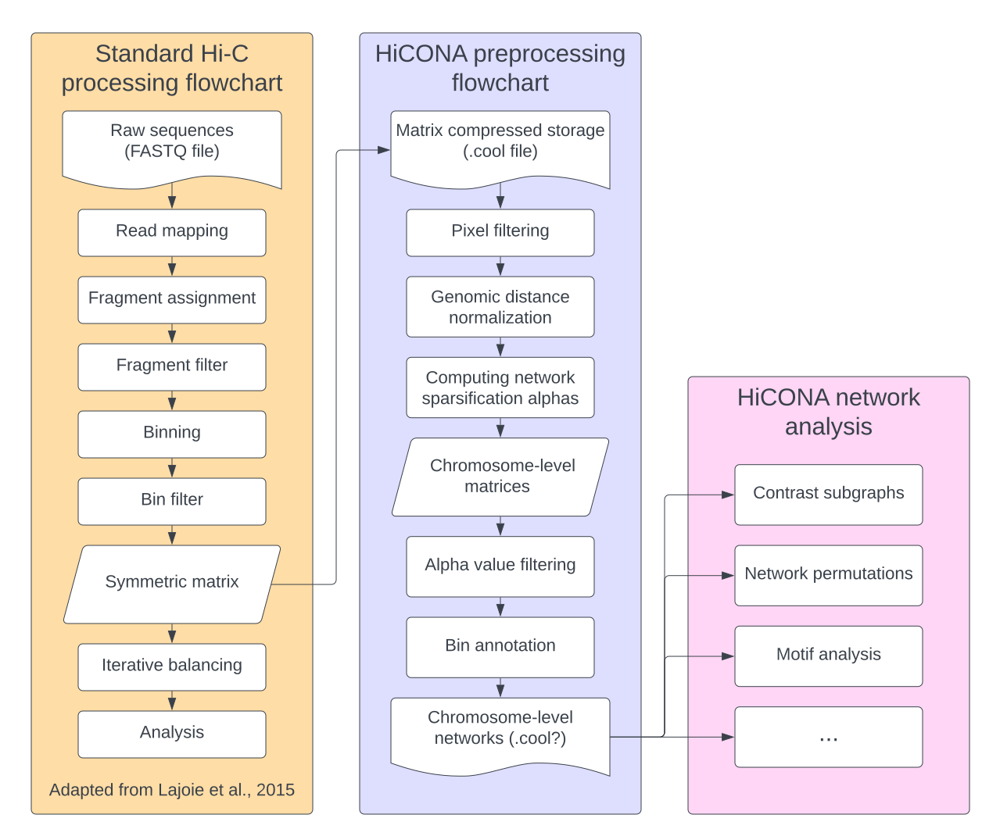

HiCONA - Hi-C Organization Network Analysis
A simple and efficient framework for network analysis of Hi-C data using Python3.
{kind=link}

Package schematic (this is just a placeholder image)
About
HiCONA is a Python3 package whose aim is to provide the tools to perform network analysis on Hi-C contact matrices. A Hi-C contact matrix is in fact an adjacency matrix, and thus a natural representation for a graph, but despite this fact it is hardly ever used as such. This is mostly due to how difficult it can be to handle these huge sparse matrices.
HiCONA tries to address these needs by building on top of two main packages:
Cooler for I/O and storage related tasks
graph-tool for graph processing and plotting
HiCONA adheres as much as possible to the cooler format specifications, striving to maintain full compatibility and the ability to be integrated with other tools. Moreover HiCONA implements other algorithms, especially for preprocessing, optimized for both computational and memory efficiency.
Development
If you want to request new features, leave your opinion, report bugs, contribute, or simply follow package development, see the main repository on GitHub.
Citing
As of yet, there are no publications on HiCONA.